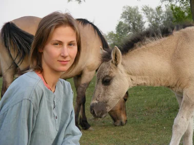

EÖRDÖGH SÁRA

Lovas-aranymetszés
Az aranymetszés törvénye:
"A szép legfőbb formái: a rend, az arányosság és a pontos határoltság -mindaz, amit elsősorban a matematikai tudományok tesznek nyilvánvalóvá." - írta a görög filozófus, Arisztotelész.
Az aranymetszést már az ókorban is ismerték, misztikus jelentések hordozójának, isteni eredetűnek tartották. Az ókori görög templomok tökéletes méreteikkel harmóniát sugároznak. Ha belépünk egy mérnöki precizitással megtervezett épületbe, legyen az középkori templom, reneszánsz székesegyház vagy magyar parasztház, minden esetben lenyűgöz minket a formák tökéletessége, a terek hosszanti és merőleges tagolása, a kupolák, tornyok, ablakok rendje, rendszere.
Az embert körülvevő világ egyik fontosabb jellemzője a rend, a rendszer s a rendszerek egymáshoz való viszonya. Ezt a matematikában arányokkal tudjuk kifejezni. Az arányosság fogalmát az "egyenletes", "harmonikus" szavak szinonimájaként is használják.
A művészetben az arány és az arányosság esztétikai értelemben azt fejezi ki, hogy a részeknek egymáshoz és az egészhez való viszonya megfelel egy valóságos vagy elképzelt rendszernek.Az arány fogalma szinte egyidősnek mondható emberi kultúránkkal, és minden korban a kultúra adott szintjét tükrözi. Már Kr. e. IV. században görög filozófusok összekapcsolták az arányosság és szépség fogalmát, ami így esztétikai, sőt etikai jellemző is lett. ...
... Az aranymetszés szabálya vonatkozhat minden élőlényre: emberre, állatra, növényre egyaránt. A következőkben a ló testfelépítését vizsgálom meg ebből a szempontból, illetve azt, hogy egy átlagos (175 cm) magasságú emberhez milyen magasságú ló arányos. Persze ezzel a számítással csak nagyon átlagos adatokat kapunk, de igazából ezen a módon mindenki ki tudja magának számolni a saját magasságához megfelelő ló-méretet.
Miért is fontos, hogy lovunk arányos legyen hozzánk? Először is a látvány, az esztétikum miatt. A lovas kifejezés ló és ember egységét jelzi. Azok a népek, akik munkára használták és használják ma is a lovat, szinte összeforrnak, egy testté olvadnak lovukkal. A harmonikus mozgás, könnyű irányíthatóság ember és ló között pedig elengedhetetlen abban az esetben, ha naponta nemcsak hogy lovagoljuk, de munkánk könnyítésére, munkavégzésre, terelésre, hajtásra is használjuk lovunkat. Ebben az esetben megjelenik egy sor praktikus szempont a lovunk kiválasztásakor: nyugalom, bátorság, kezelhetőség, gyorsaság, könnyen fel lehessen rá szállni, a nélkül ülhessek rajta, hogy a lábam lelógna, el is bírja a súlyomat, terheltsége miatt ne veszítsen erejéből, fordulékonyságából. ...